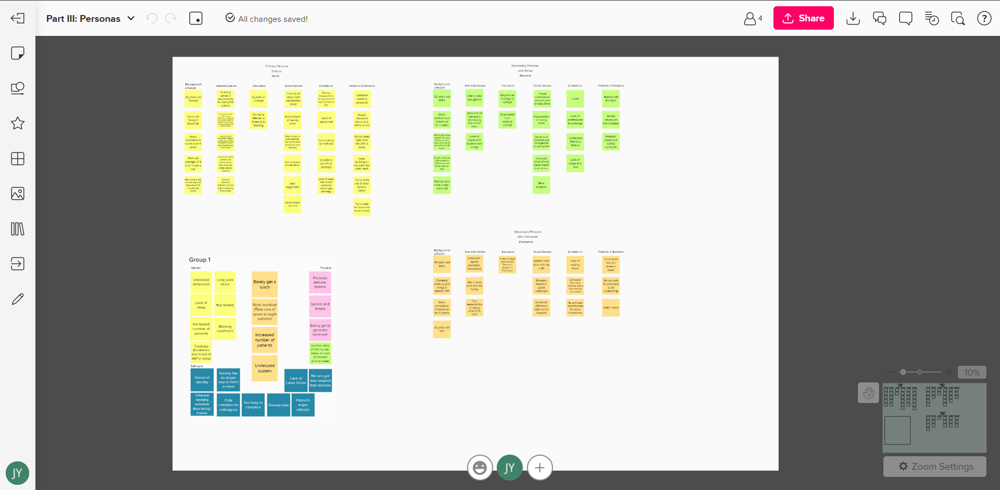
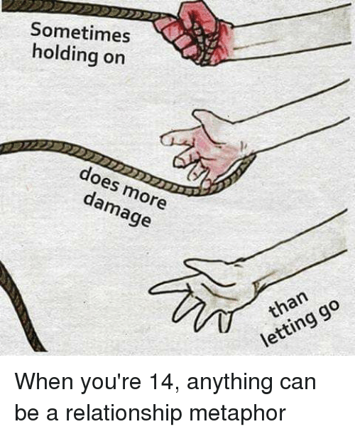

Reflection, Dec 18 2021
We are very proud of this project when we finished it. For the ideation, we extend our ideas from originally redesigning the room layout to applying new technologies to improve user experience. The goal is to finish the entire service blueprint. To achieve the goal, we divide it into layout, interior design of the room, VR immersive room, and the screen UI redesign.
Throughout the project, we have encountered several challenges. Since this is a critical wicked problem, we really want to find a way to mitigate the working stress for healthcare workers, especially nurses and doctors. But “what is they way” is pretty vague at the beginning. It is also very hard to find a measurement tool to analyze the outcome of this redesign. But we think based on the previous research, we can handout surveys and conduct detail deep interview of them to understand if their working experience have been improved, by what and by how much. Because VR is a very new technology, we have to do more iterations than normal tools to get honest people’s reactions or feedbacks on it.
It is an also very new to pitch the presentation to the investor. I think we are definitely lacking some crucial number data to convince the investor of the potential advantage of this service design. Our potential next steps will be collecting useful data information while we do our iteration of improvement in the future. By doing that, we can use some methods that I mention above, such as deep interview (around 45 minutes), or go to field observation to see their facial expression before and after entering the restroom.
Overall, this project really teaches me the workflow of ideation and prototyping. I am able to learn techniques to do primary and secondary research. The research is very crucial and becomes the back bone of the project as we really want to focus on the user. Then by creating personas, empathy map, hierarchy of needs, user sensorial and journey map can let me extract useful information of the previous research and focus on the pain point of the users. I like the prototyping stage the most because when I finish prototyping, I feel unprecedented accomplishment rushing to my heart as this is the result of how hard we worked in the past month. I also want to shout out to my teammates because I think they are exceptionally wonderful colleagues. We lean many new skills and techniques together to explore the new possibility of the outcome. Love them so much.
---------------------------------------------
Final prototyping, Dec 14 2021
Continuing to our healthcare redesign project, it is time to prototype our thoughts and solutions. We first gather around our previous research and analyze them in the Mural.
With separating different aspects of our design, we decide to do a renovation of current rest room in the hospital for healthcare workers to improving their working environment. We consider this as a service design. Before we start, we want to summarize how their daily life routine, and what pain points they will encounter during the progress. So I made a user journey map:

Pain points lead to our opportunities of renovation. We realize to try to mitigate this wicked problem, we can do utilize their resting area more than now. We first start building a new floor map in figma. After a couple iteration, we settle down with this one.
Then I start to build the 3D model of the floor in Solidworks to make sure we have the right user flow. It is my first time building a room structure model in Solidworks. The challenge is definitely how to scale everything properly so they can get assembled together. I decide to build the floor layout first, then to build the accessories such as bed, sink, tv, etc. individually.
After modeling, it is time to 3D print them and assemble them together. It is also my first time to experience printing things with the unit of millimeter. I have to scale the model several time in order to let them print smoothly as some lengths are very close to the diameter of printer nozzle.
I print the doors for several time, and still cannot get the shower head in the shower room to work because it is so tiny. But everything else comes out in amazing detail. I am extremely please with the TV and the bed because they are very similar to the real-life look.


The other challenge I encounter is that removing the support of tiny models. They are more vulnerable than regular 3D print model. And I can never reach the support under the nursing station. I learn how crucial that we have to think about the supports when we are building the model. Below is the video after removing the supports and assembling parts together.
With the general structure setting up, my teammates are able to moving forward to details such as furnishing, using VR technology in the room, and redesigning the TV in the hall way to achieve our integrated service design. And we have made the integrated service blueprint as our final prototype.
Throughout this long project, I now understand the general workflow of how to design with detailed structures. I enjoy the entire process, and I personally like the prototyping stage the best because of the feeling of accomplishment and also learning different techniques from teammates. They are amazing. Hopefully you enjoy our work so far! You can view our detail presentation in this google slide:
https://docs.google.com/presentation/d/1hQGE_st7b7h_Z8R_N2jVwEJvYt78Ykyz_51VH8AGlDk/edit#slide=id.g1074063e779_0_55---------------------------------------------
Persona, Dec 6, 2021
To move further with our research projects, we start further diagnosing our potential users. We first use Mural to gather all of our insights from primary and secondary research. We found out that healthcare workers, mainly for the doctors and nurses, are suffering physically and mentally because of their high stress work and their working conditions. We separate the categories into 3: mental, physical and combination insights. Under mental insights, we draw a special area for the self-care because it seems to be a very important component that deserve a special focus on it.
Then we start mapping the insights for our personas. As we try to be specific and descriptive of “who, what, when, where, why and how”, we decide to make the empathy map first based on our findings. We divide a categories of healthcare workers into the following quadrants:
1. What do healthcare workers hear?
2. What do healthcare workers see?
3. What do healthcare workers think and feel?
4. What do healthcare workers say and do?
Each of us oversees filling one quadrant out. I choose the hearing one and fill it out based on our primary research. Based on the observation on Youtube and the survey feedback, I realize that many nurses and doctors are struggling because they like to help others, save others. But they are also living individuals that have the same 24 hours and energy like other normal people. It is very hard to find the balance between work and life, find the balance between saving others and spending time with families. Especially for nurses, they are underpaid and cannot get the same respect as resident and specialist doctors.
Moving forwards, we use Figma to create our personas. We did the primary personas and 2 secondary personas to cover as much the diversity as we can to imply this group of occupations. I mainly focus on the third personas, Alex Thompson, and try to make him as a single father who also need to work long hours of shifts in hospital with a not so well-known occupation. We also focus on the aesthetic of the primary personas. We learn together about multiple tools in the Figma such as drawing vectors, auto layout to accomplish a polished outcome for the primary personas with almost every dimension of her life.
After setting up the personas, we have a clear user image in head when we start to define our problems and the potential innovative solutions. The first solution is that we want to renovate the resting area for the hospital workers to let them rest and release stress better in the given short period of their breaks. The second solution is we want to design a screen in hospital that mainly focus on how to improve their acknowledgement towards self-care and encouragement.

When we come up with the second ideas, I realize that we are also analyzing the hierarchy of needs for the workers. The redesign of resting area goes towards the bottom levels: physiological needs and safety needs. The second solution is more focus on the loving/belonging needs and esteem needs. Thus, our solutions are established in the human-centered point of view. With exploring different scenarios and creating journey maps while we analyzing our potential users, we hope that our design can improve even a little bit of their working environment, because they deserve this when they save lives.

---------------------------------------------
Primary research, Nov 29 2021
As we decided the to solve issues for the healthcare workers, we then conduct the primary research. Before we start, we analyze who will be our stakeholders.
Based on the secondary research, we acknowledge that workers such as residents and nurses, are under high stress and heavy mental workload. But the society has not put attention to this issue. And our group thus want to improve the situation for them. To help them rest and relax in a better way, we define our skateholders as following list. The list of stakeholders is consisted of Nurses, Doctors (primarily residents), Health care workers, pharmacists, Hospital Owners (manager, boss), General workers (cleaners, cook, hospital managers) and Patients. These are the people who are in and out the health care field every day. I then visualize the list to a graphic for a better understanding.

We choose two primary research methods: survey and observation. After identifying skateholders, we conduct a survey for the healthcare workers, mainly doctors and nurse to fill out as how stress is their work, how they rest during break time, if they are satisfied with their resting area and so on. We want to make the survey short yet rich with information that we want, so we make many questions as multiple choices/selections to encourage them answer each question.
Link to our survey:
https://forms.gle/7HcdvthFXbxoKwdE6Having the research ready, we then start to approach to our desire group of people. We choose 3 methods: sending email to YouTube account, DM on Instagram, and using Amazon Turk. From the YouTube Vlog channel, we find some business email. I search #Resident on Instagram and direct message the owner of the posts. We record them on the excel to keep track of the volume and to better manage our work.

While they are filling out the survey, we start our observations as the second method. Since we are still under the pandemic environment, instead of going to the hospital and observe over there, we choose to watch their vlogs and posts as the firsthand resources. I watch 3 of them that mainly focus on nurses. They always eat snacky food because they do not have time for a proper meal. One of them have to use many things such as eye mask, melatonin, essential oil and sound machine to be able to fall asleep after a night shift. The shift of nurses is usually from 9 to 16 hours. All of them have mental breakdown at some moments, they would cry out in the bedroom or bathroom and then return to the work. They think the society does not realize how difficult nursing can be, and they do not get paid enough like doctors. They advocate for self-care and encourage to speak out the difficulties to the public to educate more people.
We jog down our notes of observations, and have a meeting to discuss them with the results of survey. We come up with 3 initial ideations. The first one is to design a place/tool to release their stress properly. The second one is to redesign the resting area in the hospital to provide them a better resting environment. The third one is to hang a huge screen on the wall in the lobby with encouragements and other’s concerns, so that they know they are not alone and they can express their stress to the public. Eventually we think we can combine these 3 designs into 1 integrated service/environment design, and we hope we can come up with brilliant ideas to help nurses out because they really deserve this.
---------------------------------------------
Research for design: Mess Map
For this week, we first start our assignment in class to make a rough mess map. Before the class starts, we have a google doc to collect everyone’s interests and their willing-to-work field in the future to come up with a common idea.
We decide to choose healthcare area as we feel like we should do something for them. They are the heroes of pandemic area and they should deserve a better working environment. But healthcare is also a broad field. During the lecture time, we start to put in different factors of health as our 1 rough mess map.
The health related ideas we put together is workers, inequality of health resource, patients, diets, living creatures, physical health, mental health and mediation. After drawing the connections and common points with my mess map, we decide to look into the healthcare workers issues, then we start with our secondary research.
For my part, I am assigned to research the types of injury that will happen in the healthcare field. The following injuries are very likely to occur: overexertion, needle sticks, violence, slips and falls, sprains and strains, sleep deficiency, infections, broken bones and head injuries. Out of all the injuries, sprains and strains is the most common one due to the long standing and long shifts. But when I take a larger look of all these injuries, they are occuring most likely because the lack of sleep. So I do a deeper research on how residents encounter with sleep deficiency.
The rule of most healthcare workers is that they cannot work more than 16 conseccutive hours. But the fact is that they usually work up to 28 hours shift because of lacking human resources. The lack of sleep will impare performance so that will impare the patient safety. It will also increase the risk of occupational injury and motor vehicle crashes when they go home afterwards. The oxford university conducts a project of effects on resident work hours, sleep duration and work experience. In the result, they compare with the Extended Duration Work Roaster (EDWR), which will extented-duration (>= 24 hr) shifts to the Rapidly Cycling Work Roster (RCWR), which is scheduled shift lengths were limited to 16 or fewer consecutive hours. As the result, RCWR obtained significantly more sleep per week on the RCWR compared with the EDWR. Based on this result, we realize that the sleep is really important as it can prevent many injuries in the healthcare working field.
Then we zoom together and work on our refine mess map. And we color-code the map: each person will have different color, and what are in connections and in common we will mark them as grey. For our final map, we conclude the physcial and mental health issues and we analysis what are the potential solutions can be. For physical issues, we are thinking massage, diet, and a better sleep environment. For mental issues, we are thinking mediatatoin and treatments with VR devices. But still undecide what is the outcome as we are going to investigate more on the topic.
Barger, Laura K, et al. “Effects on Resident Work Hours, Sleep Duration, and Work Experience in a Randomized Order Safety Trial Evaluating Resident-Physician Schedules (Rosters).” Sleep, vol. 42, no. 8, 2019, https://doi.org/10.1093/sleep/zsz110.
Bridger, Haley. “Brigham and Women's Finds Doctors Sleep More When Hours Are Cut.” Harvard Gazette, Harvard Gazette, 20 May 2019, https://news.harvard.edu/gazette/story/2019/05/brigham-and-womens-finds-doctors-sleep-more-when-hours-are-cut/.
Rebojo, Vissuelo. “Common Injuries with Nurses & Healthcare: NC Workplace Injury Lawyers.” Hardison & Cochran, Hardison & Cochran, Attorneys at Law, 19 Sept. 2020, https://www.lawyernc.com/workers-compensation-lawyer/common-workplace-injuries/nurses-healthcare/.
---------------------------------------------
Time capsule part 3: narrative
I decide to do a little interesting fiction in this assignment because in the year of 2145, why not? Everything is possible around then, so I just let my imagination go wild. All the physical objects seem to convert to digital in nowadays. For example, now supermarket is online, and you can buy grocery with one click; reading Kindle instead of a thick book in hand; let camera takes the first bite of the food.
Since my time capsule is all about old-fashion stuffs and techniques, I want to create the conflict of future techniques and the old-fashion ones as the climax. My imagination for the year of 2145 is that the world converts to an 4D or even higher level of the dimension, where everyone and every stuff live in the digital world that is not 3D, physical and tangible. Until one day, my time capsule is discovered to shock the that once, the world is existed in 3D.
Setting:
Between now and the year 2145, human has developed more and more technologies based on machine learning. Now instead of living in the physical world, people will lie in the machine where brains connect to a host, and mentally live there eternally while the bodies are maintained by the machine.
Protagonist:
A girl named Alice, she is curious, brave, talented, and enjoy life full of adventure. She loves history, and loves to challenge the authority.
Storyboard:
I use XMind again to plan what my story looks like. What will my setting, intro, climax and ending be like with the protagonist I create.
Then I start drawing them out. I first draw it on the iPad with pro create. In order to make up my poor drawing skill, I suddenly think of using a interesting way to present the story, which I can make the story into a puzzle and let people figure it out step by step. So I print the drawing out and cut them into puzzle shape. As this is a fiction with mystery, I think the extra part of every puzzle kind of add in the mystery feeling of “what will happen next??” Turn on the sound to have the full experience of this story with music.

Here is the completed story drawing.
Challenge:
I think the challenge of this assignment is when to create a plot not based on reality, there are so many things need to be considered because we want the story to be reasonable. I spend lots of the time structuring the concept setting of the fiction world instead of the plot itself. Because many time when I try to continue to the next plot, I will realize that the setting is missing something and go back to add it. The logic behind constructing the new world is really time-consuming, but I think I enjoy it so far.
---------------------------------------------
Time Capsule 2: prototyping the capsule
Now it is time to put my selected objects into the time capsule and send it to the future! I am thinking how and what would make people from future be fascinated about at first. So my first step is going online to find some inspirations. I found people tend to use hard material and tricky structure to bring the mystery vibe to the time capsule. Some might also locks the capsule or makes it into puzzle to make the capsule more secure. With the ideas in mind, I start to brainstorm what might fit with my selected objects.

I start by using the XMind app on iPad to let myself see the common cross points of the pencil cases, weekly planner, and the nail clipper. After a little bit of brainstorming and based on the theme I selected last week, I come across an idea of my time capsule. I want it to be non-electrical involved, yet has interested structure so that when people from the future first see the time capsule, they will feel fascinated that even without electricity and machining, things can be made in certain ways that are sophisticated. Thinking about this, I start to investigate some Asian ancient structure that made by wood or origami to get more inspirations.


Then I decide to try out both just to see which is cooler. And I create the wooden one first. This is inspired by the Telescopic ball. I use the take-out chopstick I have at home and cut them in half, creating a shelf that can hold things it. It can be extended by twisting the sticks.

After the wooden one, I feel like origami can give me a more sophisticated yet completed box, so I try the origami version too. I think this is definitely more challenge. I have to confess that the origami is really hard. But I like how it turns out at the end to be a completed box. I am also confident that people in 150 years later will be amazed by this structure, just like how we view ancient engineering stuffs now.

Reference of the box origami: https://www.youtube.com/watch?v=rs35JsoJlFQ
---------------------------------------------
Time Capsule 1
When I first think about personal meaningful objects, it is very hard to decide which objects to choose. Then I decide that I am going to search something, if I lose it somehow, I will be really sad and pity. This is the logic of how I define my personal meaningful objects for this assignment. As this is part of the time capsule project, I also consider what will be fun to send out to the future. This becomes another part of concern when I am choosing the object.
Here are the three objects I choose: weekly planner, pencil case, and nail clips. Each of them has been with me for a long time, also has profound meaning or function to me that if I lose them, I will feel like losing part of my heart. They are also very old-fashioned style as thinking of 150 years later, when I imagine everything becomes very eletrical.
Then I start to think what methods I should use to narrative the stories of them. I choose shooting video in a fun way to tell their stories. I have been watching many vlogs on the YouTube when youtuber recording their life. I realize that they all use some interesting transitions to make the video smoother and fun to watch. This is a skill I always want to learn and try to use it to document my life. So why not starting with this assignment? Below are some tutorials of how to make basic fun transitions for the videos that I read/watch:
https://www.youtube.com/watch?v=oyNXvXpbNQ4https://www.wevideo.com/blog/for-work/7-easy-camera-transitions-to-enhance-your-videos
I use my phone to video shoot and use iMovie and Clip app to edit the video. This is the first time I am using this two apps. There is a little bit learning curve, but once I try a couple times, they become very handy and fun.

After deciding the methods, I start to think the frame for my stories. I use the storytelling canvas to have my thoughts together as the screenplay to remind me what to record for the video.


For the weekly planner book, I decide to apply the slide-in and the clap techniques to make the video more interested. This is very important to me because this is the habit I have for almost five years. I like to write some New Year resolutions, what happened that makes me feel happy in a specific day, and my remainder. This little book is what puts me together in order. And it feels special when I finish a year and look back what happen in this year, the gratefulness will run into my heart.
For the pencil case, I use stop motion. I got it as a gift from my best friend since 5. We were apart in different schools after 6th grade. She gave me this when we were in 10th grade, and it lives with me since then. Every time I feel pressure or hinder, it is always here reminding me that I am not along. It also contains pens and toys I collected from all the country.
The nail clip is also a gift from a best friend. I got it during the 7th grade, and it is from Japan. This is the first foreign gift of mine and makes me realize that the quality of other countries’ industries. It is so cute that I even keep the package of it until now. Because it is in my make-up bag, it also travels the world with me too.
The shooting turns out very time consuming but definitely fun. Thank you for view this! Hope you like the ASMR and LoFi music inside!
---------------------------------------------
Assignment 5 New metaphor, Oct 18 2021
I want to challenge my imagination with this assignment, so I want to choose a complicate object to do a new metaphor. What comes into my mind is the word “Relationship”. In this case, I want to be specific about lover relationship.
I have heard many different metaphors for relationship. Some says, “A marriage is a garden and you are the gardener”, some other says “Marriage is the grave of love”. Some compares relationship to a safety blanket, while others might think it is toxic sludge. See, relationship among two people can be varied in either good way and bad way. People tend to say relationship is hard for most of the time, because hard to leave someone you love yet hurt you. I want to keep all these characteristics in my new metaphor because I feel the previous metaphors are not comprehensive enough, yet I feel it will be really hard to find a precise one that can have many aspects, until I remember this childhood online game I had played. Let me introduce you to Gold Miner.
 Click here for the game demo
Click here for the game demo
This game is about a miner trying to get the most out of the underground: gold, diamond, and mysteries bags. But there is also heavy rock, pig that only worth 2 dollars, and TNT that might hurt your tools. Little gold, diamond, and pig are light so the miner can pull it up in a second, verses large gold, rock will take minutes to bring them up. The hook of the miner will swing from left to right, and the player gets to decide when to put down the hook when finishing aiming. Mysteries bags will probably give you either money, power lotion (that boost your strength so you can pull faster) or an explosive (use it when hooking up to a heavy rock). So how is this game related to relationship? I use Figma to create a sketch for this new metaphor. Here is my thoughts process:
Here are the metaphors for different kind of people you can choose for your relationship:

I am hoping for this new metaphor can give people more confident to make the choice in their relationship, pretending you are playing a game. I have heard stories about people getting hurt but just cannot end a relationship. But if you are playing the gold miner, you will not want that rock in any chance or you will blow it up if you have an explosive on hands. Some other people are afraid of chasing of someone really good, but if you are playing the game you will try to get the diamond no matter how tricky the angle is.

With this new metaphor of relationship, I want to stop referring relationship as either positive or negative. Everyone is having different relationship; it is a little bit not responsible to define it for all. We all have different preferences, different expectations. Relationship should be something that is interactive, something you fight for the best, just like the gold miner game.
---------------------------------------------
Assignmemnt 4 50 Renderings, Oct 11 2021
To start this assignment, I am first thinking of which objects I should choose. I brainstorm a couple of examples such as books, fruits, then I realize these are too specific. In order to improve my skills of creative perception, interpretation and representation, I challenge myself to choose a “vaguer” object, so that I can interpret it to more metaphors. My thought process is in the below picture: Time? Love? Or even Magic? Within all these vague objects, I decide to do “Water”. Water can be any shape of the container. Water can be soft and gentle, but it can also be very powerful and making impact. Water is the transparent, but it is almost the main constituent of Earth’s hydrosphere and the fluids of all known living organism. It is very important for all of us yet remain mystery of itself. It will be fun to find all the metaphors and to render them.
Next step is sorting out the mediums I can use to render water. I divide them into the following categories: 2D graphic, 3D graphic, and the sound. Then I start rendering the water based on my image to it.

First 10 of the renderings I choose Procreate on iPad to completed. The 1st one is three water drips of vector image I drew. The 2nd one is an abstract version of water, and I am inspired by the Tokyo Olympics’ pictograms. The 3rd one is animate version of the water bottle. The 4th one is peaceful ocean created by the “Oceans” in the Procreate brush library. The 5th one is a Japanese animate version of the tap water. The 6th one is also the “Water” pen in the Procreate brush library. For the 7th one, since the word “watermelon” has water inside, it will be interesting if I fill in water with watermelon. The 8th and 9th are the sketch of waterdrop with different brushes (6B pencil and airbrush). 10th is the splash of water.

Next, I use a tissue box with a pretty color to cut out 5 different language of the word “Water”. They are truly different compare to each other, but the text to the native speaker is the strongest metaphor for water, as this represents the water in that specific culture.
Then, minimalistic approach comes into my head. Besides pure color block, I also use yard, colored paper, sand and plastic bottle to represent the water.

For the next group, I use photography to approach the realistic. To represent the flexibility of water, I choose different shapes of container.

The name for the below group photography is called the “Present of the water”. Water is easy to flow in some of the materials and change the properties of that materials such as paper towel or tissue, but materials like wax paper or aluminum sheet are hard to get wet.
I also collect a metaphor group for objects that are mostly, over 70% composted by water. They are Earth, jellyfish, coconut, human being, and cloud.

Last but not lease, I use sound as media to give people images of water. I gather 10 kinds of different sounds from both nature and artifact. Below are the audio:
Here are my 50 renderings of water. The process is fun yet hard in my opinion, but it definitely opens my imagination and push myself to develop more interested medium to express my thoughts. Thank you for viewing!
--------------------------------------------------------
Assignment 3 Translating Affordances, Oct 4 2021
Speaking of taking the inspiration to the interfaces of app, the first one that comes to my mind is those map apps. I am choosing the app Transit today because I think it has specific targets, strong affordances, and I cannot live without it in the New York City (I think anyone in NYC should have it).


I start to explore what I can do to bring this interface to a physical present. The app simply shows the location shape, where the user is, and the time information for each train. Unlike Google Map, the Transit map only serve for the NYC Metro information. I analyze the affordances below:

Then I start to build my prototype. I mainly used cardboard to differentiate the layers of the interface. R and B line are chosen to present in the prototype. I think it will be fancy if the location of the user actually lights up. So I bring out the electronic kits to build up a simple circuit, and use a blue LED as the indicator of my current location.


My final result and the video demonstration:

The video demonstrates how to interact with the prototype. Just like in the real app, the row of the train will shake a little bit when the train is approaching. If you tap on one specific line, then the “screen” will zoom in only showing that line.
The last assignment really opens my mind of how to create a prototype with the resource I have. I think the challenge part of this assignment is to analyze the affordances in the app and physically making them. I was hesitating at the beginning of what material I should use for showing the user location, because I think it is a very special and important affordance to alert the user. It ends up that LED is a good choice! I am excited to create more fun prototype in the future!
--------------------------------------------------------
Assignmemnt 2 Endanger Animal, Sept 27, 2021
Sulawesi Cardinal Shrimp
The native of this shrimp is in Indonesia. In 2018, the IUCN RED LIST marked them as Critically Endangered and possibly extinct in the wild. The current population trend is still decreasing. The shrimps live in the freshwater, which is inland waters. Caridina dennerli is available in the aquarium trade, most of them is wild caught even though the current levels of harvesting are not thought to have a considerable impact. They only have 1 year life length. Because of such short life, they become hard to multiply due to the following factors:
1. Lack of biological resources due to the fishing & harvesting aquatic resources
2. Dams and other water management break the natural system
3. Invasive and other problematic species, genes& diseases, the most critical one is Flowerhorn cichlids
4. Pollutions from industrial & military effluents, and agricultural effluents


Among these 4 factors, the pollution is one of the most threaten to this species, as there are nickel mining and hydro-electric power installations that bring siltation to the lake. The rapid expanding of human population around the lake cause the erosion and organic effluents too. This species was considered abundant in 2009, but then a significant decline was observed in 2011, till 2017, there was no specimens were found at two sites where they had been abundant before. However, sadly, no conservation plans are currently in place for them. We need more research to confirm if they are still extant. If so, the protection of their localities and habitats is needed, along with controlling the invasive species and harvest management. I decided to use aluminum can (because it can stand for the industrial pollution and human bump population at the same time) to make the prototype of the shrimp, here are some process pictures:


And here is my final result:


Thank you for viewing!
reference:https://www.iucnredlist.org/species/198055/109683594
--------------------------------------------------------